WinkBeds · Convert exp 100350916 (control 1003185379 / variation 1003185380) · QA 2026-11-11 · Chrome, Edge, Firefox, Safari (WebKit) desktop
Verdict: NOT READY. The variation is correct on all 4 browsers. The control arm is empty, so the test as configured doesn't compare what the ticket asks for.
| Browser | Tests | Pass | Fail | PASS* (harness) |
|---|---|---|---|---|
| Chrome Desktop | 21 | 19 | 2 | 0 |
| Edge Desktop | 21 | 19 | 2 | 0 |
| Firefox Desktop | 21 | 13 | 2 | 6 |
| Safari Desktop | 21 | 18 | -3 | 6 |
PASS* = the "no scroll" check tripped because the page reflowed by itself (shop-box/WIN248 shift). A no-click baseline reproduced the same 497px jump in Firefox; a DOM click never scrolled the page in Firefox or WebKit.
changes: [], so the control renders the native 4-icon bar (365-night risk-free trial / Lifetime warranty / Free shipping and returns / Financing available). The test would measure native bar vs. no-link bar, not links vs. no links. Fails on all 4 browsers.utm_campaign containing Cro291mode, WIN269 excludes it). Once that condition is removed at launch, both experiments target the same page and desktop audience: WIN269 must be paused, or its winner deployed, first.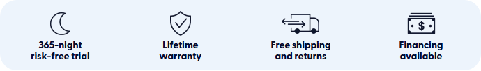
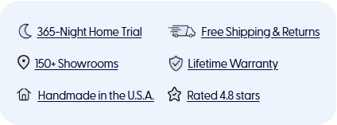
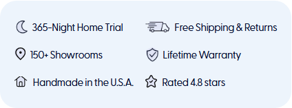
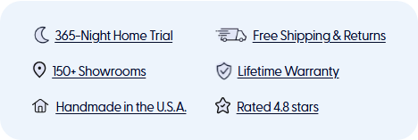
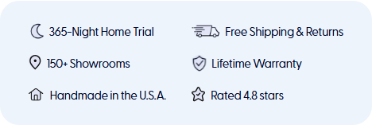
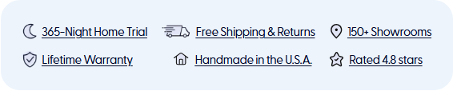
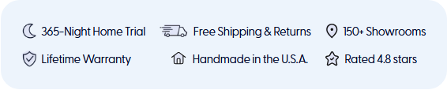
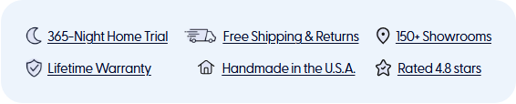
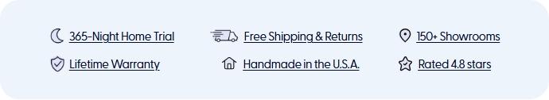
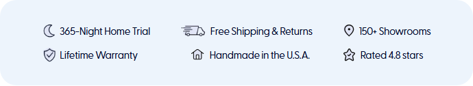
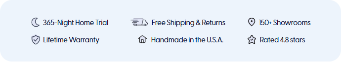
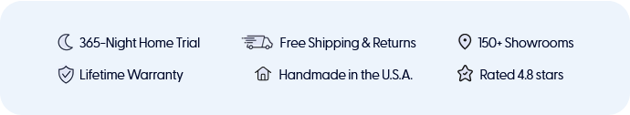
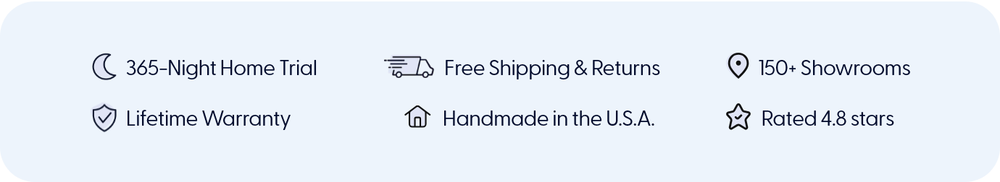
| Test | Chrome | Edge | Firefox | Safari |
|---|---|---|---|---|
| C1 control shows the WIN269 winner bar: 6 underlined links | FAIL | FAIL | FAIL | FAIL |
| C2 control: clicking a benefit fires the WIN291 any-benefit + per-benefit goals | FAIL | FAIL | FAIL | FAIL |
| V1 bar replaces the native bar: 6 benefits, WIN269 order + copy | PASS | PASS | PASS | PASS |
| V2 no links: no <a>/href, no underline, default cursor, not in tab order | PASS | PASS | PASS | PASS |
| V3 hover: no underline / link affordance appears | PASS | PASS | PASS | PASS |
| V4 trial: click fires any-benefit + own goal once, no scroll, no navigation | PASS | PASS | PASS* | PASS |
| V4 shipping: click fires any-benefit + own goal once, no scroll, no navigation | PASS | PASS | PASS* | PASS* |
| V4 showrooms: click fires any-benefit + own goal once, no scroll, no navigation | PASS | PASS | PASS* | PASS |
| V4 warranty: click fires any-benefit + own goal once, no scroll, no navigation | PASS | PASS | PASS* | PASS |
| V4 usa: click fires any-benefit + own goal once, no scroll, no navigation | PASS | PASS | PASS* | PASS |
| V4 rating: click fires any-benefit + own goal once, no scroll, no navigation | PASS | PASS | PASS* | PASS |
| V5 clicking the icon and the card padding: icon counts, padding does not | PASS | PASS | PASS | PASS |
| V6 all 6 icons load and render | PASS | PASS | PASS | PASS |
| V7 1001px: layout identical to the WIN269 winner (card, rows, item positions, font), no overflow | PASS | PASS | PASS | PASS |
| V7 1100px: layout identical to the WIN269 winner (card, rows, item positions, font), no overflow | PASS | PASS | PASS | PASS |
| V7 1280px: layout identical to the WIN269 winner (card, rows, item positions, font), no overflow | PASS | PASS | PASS | PASS |
| V7 1366px: layout identical to the WIN269 winner (card, rows, item positions, font), no overflow | PASS | PASS | PASS | PASS |
| V7 1440px: layout identical to the WIN269 winner (card, rows, item positions, font), no overflow | PASS | PASS | PASS | PASS |
| V7 1920px: layout identical to the WIN269 winner (card, rows, item positions, font), no overflow | PASS | PASS | PASS | PASS |
| V8 not shown at 1000px (desktop-only CSS breakpoint), native bar unaffected | PASS | PASS | PASS | PASS |
| V9 no page errors from the variation, single injection after 10s | PASS | PASS | PASS | PASS |
Spec: testing/win291-reassurance-benefits-v2.spec.js · recon: testing/win291-recon/